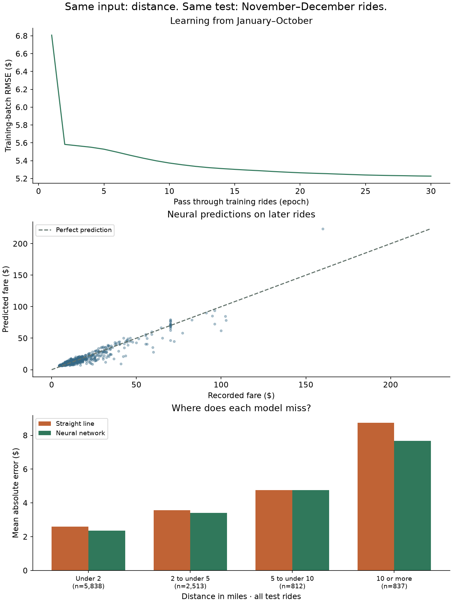

DuckDB + Partitioned Parquet
microSQL supports SELECT-FROM-WHERE, but not grouped revenue, running totals, or top-k results. In this lab you use DuckDB to answer those questions over 60,000 sampled NYC yellow-taxi trips from 2024. You then compare CSV and Parquet, inspect column projection and partition pruning, and use EXPLAIN to understand slow queries. Treat the reference timings as examples, not performance targets.
Dotted-underlined terms like this one are systems jargon; hover or tap for a plain-language explainer that opens right below the sentence you're reading.
Try analytical queries on a browser sample
The browser demonstration contains 600 rides sampled from the lab’s 60,000-row dataset. Run the presets to inspect grouping, aggregation, ordering, and limits. The browser recognizes those example patterns; use DuckDB in the starter folder to write and test your own queries.
This JavaScript demonstration implements a limited SQL subset: GROUP BY, ORDER BY, LIMIT, aggregates, and CASE. It is not DuckDB and does not support every assignment query. The lab uses DuckDB over the full dataset.
Open a terminal in the top-level AdvanceDatabase folder you cloned in Lab 1. Pull the latest files, then open this lab’s starter folder:
git pull cd labs/lab-08/starter
These 600 rides come from the lab dataset. Aggregate totals differ from the full 60,000-row results, and smaller groups may differ in composition. The harness checks your DuckDB queries against the full file.
Connect GROUP BY, windows, and LIMIT to query operators
microSQL supports SELECT-FROM-WHERE. DuckDB adds grouping, window functions, and top-k queries. Relate each construct below to the query-execution ideas from the first part of the course:
| Construct | What it means | Connection to query execution |
|---|---|---|
GROUP BY month | partition rows by value; aggregate each group | a materializing operator (Lecture 4's pipeline-breaker); hash aggregation usually consumes all input before emitting; ordered aggregation can stream groups |
SUM(...) OVER (ORDER BY month) | a running total: each row sees an aggregate over a moving frame | an operator with memory: sort if needed, then compute the running total |
ORDER BY fare DESC LIMIT 5 | top-k | the engine may use a bounded top-k structure instead of sorting every row; inspect EXPLAIN to see the chosen plan |
Understand the sample and cleaning rules
Earlier labs used small student tables and generated benchmarks. This lab uses 60,000 sampled NYC yellow-taxi trips from 2024. The Taxi and Limousine Commission publishes monthly Parquet files containing millions of trip records. The supplied sample contains 5,000 trips per month, selected after cleaning with a fixed seed. gen_data.py unpacks that prepared sample into the files used by the lab. Review the cleaning rules below: excluding particular trips changes the population represented by your results.
| Rule | What it drops | Share of a raw month |
|---|---|---|
| passengers between 1 and 6 | missing counts and values outside the selected range | about 6% |
| distance between 0.1 and 100 miles | distances below 0.1 or above 100 miles | under 2% |
| fare between $1 and $500 | fares outside the selected range, including negative and unusually large values | about 1% |
| payment is card or cash | disputes, no-charge trips, and unknown payment types | about 7% |
| duration between 1 and 180 minutes | durations outside the selected range, including negative and unusually long trips | under 1% |
Cash trips have tip = 0 because the source records card tips but does not record cash tips. A zero in this field therefore does not prove that no tip was paid. Compare tip by payment, and explain the difference in terms of how the data was collected. In this lab, “revenue” means the recorded fare + tip, so it excludes unrecorded cash tips.
Join a fact table to a dimension table
The two tables form a small star schema:
rides is the fact table, one row per trip, and zones is a dimension table,
one row per taxi zone with its borough, joined on rides.pickup_zone = zones.LocationID.
| Column | Type | Meaning |
|---|---|---|
ride_id | INT | 0 to 59,999, in pickup-time order |
month, day, hour | INT | pickup time; month is also the partition key of the Parquet folders |
passengers | INT | 1 to 6 |
distance | DOUBLE | miles |
fare, tip | DOUBLE | dollars; revenue in every question means fare + tip |
payment | TEXT | 'card' or 'cash' |
pickup_zone, dropoff_zone | INT | TLC zone ids; join to zones.LocationID for the borough and zone name |
duration_min | DOUBLE | trip length in minutes |
Write one SQL statement for each of eight questions
Each is a marker comment in assignment.sql; write one statement under each.
The harness compares your results against reference answers computed live: ordered
questions exactly, unordered ones as sets.
| Q | Asks | Exercises |
|---|---|---|
| 1 | total rides + revenue | aggregates, ROUND |
| 2 | revenue by month | GROUP BY + ORDER BY |
| 3 | distance by payment type | grouped averages |
| 4 | five most expensive rides | ORDER BY ... LIMIT, with tiebreak |
| 5 | card share per month | CASE inside AVG: average a 1-for-card, 0-for-cash indicator |
| 6 | running revenue | a window over grouped rows |
| 7 | Q4-of-year totals from the partitioned files | read_parquet(..., hive_partitioning = true) + pruning |
| 8 | revenue by pickup borough | a JOIN to the zones dimension table: use zone attributes to group the rides |
Work out the intermediate rows before writing Q6
Use four toy trips to separate grouped totals from a running window. The example names the grouped result monthly, which makes it clear what one row represents at each stage.
Worked result: Monthly rows are (1,20) and (2,30). Adding the running window yields (1,20,20) and (2,30,50).
Enable JavaScript to step through the code and intermediate state.
Implementation checkpoints: Q4 needs its specified tie-breaker, ride_id ASC. Q5 averages a numeric card indicator; it does not divide card fare by total fare. Q6 windows over monthly totals. Q8 joins each ride to one zone, so an accidentally duplicated dimension key would multiply revenue.
Start with a question about the city
Open the database discovery workbench → Build a local DuckDB database from the bundled 60,000-trip taxi sample, then edit queries and inspect charts. Predict first: does JFK have a higher typical fare than LaGuardia, and does that comparison survive switching to fare per mile?
The seven investigations cover sampling, recorded tips, airport routes, daily rhythms, trip mix, top destinations, and join cardinality. Save one finding, one limitation, and the next query you would run. These are ungraded discovery exercises; the lab’s required queries stay separate.
Part 1 · Build ~30 min in class
After each query, use the query-level checks to test it before completing the rest of the lab.
python3 -m pip install duckdb, get the starter folder, runpython3 gen_data.pyonce. It unpacks the shipped sample intodata/: the CSV, the same rows as Parquet, twelve partition folders, the zones table, and a nested JSON file for Part 4. Everyone gets the identical 60,000 rows.- Work the queries in order: each adds a SQL concept. Test the query you just wrote with
python3 test_duckdb.py --unit Q1(replace Q1 with its question number). The harness creates theridesandzonestables for you. For interactive exploration, use the suppliedlab08_explore.ipynbnotebook and run its setup cells first; a new DuckDB connection does not automatically contain those tables. - For Q5, average a card-payment indicator: use
AVG(CASE WHEN payment = 'card' THEN 1.0 ELSE 0.0 END). The CASE expression assigns 1 to a card payment and 0 otherwise, so the average is the fraction paid by card. - Q6 stacks a window on a group:
SUM(SUM(fare + tip)) OVER (ORDER BY month)uses the inner SUM to calculate each month’s revenue, then the outer window SUM to accumulate those monthly totals in order. - Q8 is your first join since Lab 4, and reuses the join reasoning from Lab 4. The optional Lecture 9 explains cost-based join selection. A hash join can build a table from the 265 zones and probe it with rides. Read the
plan with
EXPLAINand find the build and probe sides.
Round exactly where the question says: round(sum(...), 2) and
sum(round(..., 2)) differ by pennies and the harness notices. Column
aliases must match the question's names (n_rides, not count).
And Q7 needs hive_partitioning = true or month won't exist as a
column; it lives in the folder names.
Part 2 · Verify ~15 min in class
Test one query at a time
Run these commands from the starter directory. --list lists Q1–Q8. Use --unit Q1 to run only Q1’s query from assignment.sql; unfinished queries are not run. Use --unit to check all eight queries.
$ python3 test_duckdb.py --list
$ python3 test_duckdb.py --unit Q1
$ python3 test_duckdb.py --unitEach selected query uses the same correctness check as the full test run. Before submitting, run python3 test_duckdb.py without flags to check all eight queries.
Run the full tests
The passing output below is the target after completing the required methods or queries. On a fresh starter, failures marked not implemented yet or missing-query failures are expected. A unit check can pass while the remaining integration tests still fail.
$ python3 test_duckdb.py
[PASS] SQL: Q1 totals
[PASS] SQL: Q2 revenue by month
...
[PASS] SQL: Q7 partitioned Q4 totals
[PASS] SQL: Q8 revenue by pickup borough (join)
8/8 tests passedA classmate's Q2 fails with "result differs: yours starts [(1, 111,003.0)], expected starts [(1, 111,003.22)]". Their query looks right. What did they round, and where?
Show answer
The output suggests that they rounded to whole dollars or rounded input values before summing. Inspect the query to distinguish those cases. Q2 requires rounding the final sum to two decimal places. Binary floating-point aggregation can also introduce small differences; the optional DECIMAL exercise explores exact fixed-point storage for currency.
Part 3 · Measure ~25 min · finish as homework
Example run on an Apple-silicon laptop. Timings and plan formatting vary by machine, cache state, and DuckDB version:
$ python3 measure_parquet.py
1. FORMAT sum over 60k rows: CSV 59.5 ms Parquet 0.5 ms (~119x)
2. PROJECTION 2 columns of 12 (Parquet): 0.8 ms · columnar layout reads only the columns named
3. PRUNING month = 12 over 12 partition files: 0.6 ms
EXPLAIN confirms the filter reached the file level: yes
the plan's scan node:
│ READ_PARQUET │
│ READ_PARQUET │
│ File Filters: │
│ (month = 12) │
│ Scanning Files: 1/12 │
4. PANDAS revenue by month, three ways (pandas load took 94 ms first):
pandas groupby on the loaded frame: 1.0 ms
DuckDB over the Parquet file: 0.8 ms
DuckDB over the pandas frame, in place: 2.7 ms (no copy: DuckDB scans df's memory)about 120× Parquet-over-CSV speedup in this example run; measure your own result
In this reference run, the Parquet query was about 120× faster than the CSV query, and the month filter reduced the partition files scanned from twelve to one. Explain the results using parsing cost, column selection, compression, and pruning; do not treat the timing ratio as a target. Step 4 compares pandas aggregation, DuckDB over Parquet, and DuckDB over an existing dataframe. It also shows how DuckDB can query dataframe memory without first copying it into a separate database table.
Change the experiment. In measure_parquet.py, change the pruning
query's predicate from month = 12 to day = 25 and run it again. Report the
plan's "Scanning Files" line and the time. Then explain, in one sentence, what the partition key
would have to be for that query to prune, and what Q2 would cost under that partitioning.
Part 4 · Fix the slow query ~20 min · homework
Query structure can affect how much data an engine scans and how much it sends to Python. slow_queries.py compares three pairs of equivalent queries. Run them and use EXPLAIN to relate their timings to the chosen plans. Plan details and speedups can vary by DuckDB version.
$ python3 slow_queries.py
A. PUSHDOWN WHERE month = (SELECT max(month) ...): 1.8 ms (no file filter in the plan: every file is opened)
WHERE month = 12 (looked up first): 0.7 ms File Filters:
2.8x here, and the gap grows with the data: a value hidden inside a
subquery is unknown when the planner decides which files to open, so it opens all of them
B. FETCH-FILTER SELECT * then filter in Python: 40.3 ms (60,000 rows x 12 columns cross into Python)
WHERE month = 12 in SQL: 0.4 ms (about 5,000 rows x 2 columns are touched)
102x: move the filter to the data, not the data to the filter
C. LOOP twelve queries, one per month: 4.4 ms (twelve scans of the file)
one GROUP BY month: 1.0 ms (one scan)
4.3x: one grouped aggregation can replace twelve separate scansFor A, compare whether the scan has a file filter when the month comes from a subquery and when it is a literal. Some versions or plans can apply dynamic filtering, so inspect your output rather than assuming every file is read. For B, SELECT * sends 60,000 full rows to Python before filtering; moving the filter and aggregate into SQL reduces data transfer and returns one result. For C, compare twelve separately planned scans with one GROUP BY scan.
gen_data.py also wrote data/rides.jsonl, one JSON object per ride
with nested fields: pickup.zone, pickup.hour,
dropoff.minutes, payment.type, payment.fare,
payment.tip. Logs, API responses, and event streams often contain nested objects like these. Using read_json_auto('data/rides.jsonl'), reproduce Q8 (revenue by
pickup borough, top 5) straight from the nested file. Check DESCRIBE first to see
how DuckDB typed the nested fields.
Show answer
SELECT z.Borough AS borough, count(*) AS n_rides,
round(sum(r.payment.fare + r.payment.tip), 2) AS revenue
FROM read_json_auto('data/rides.jsonl') r
JOIN zones z ON r.pickup.zone = z.LocationID
GROUP BY z.Borough ORDER BY revenue DESC LIMIT 5;DESCRIBE shows each nested object typed as a STRUCT, and dot
notation reaches inside it. The result must match Q8 exactly: the underlying rides and calculation are the same.
The JSON file is four times the size of the CSV and fourteen times the size of the Parquet for
the same 60,000 rides, reflecting repeated field names, text representation, and the lack of columnar compression.
Assignment
Submit assignment.sql to Gradescope, per the course
submission instructions, by Tuesday Oct 20 at class start. One file; the harness score you
see locally is the grade.
Project proposals remain due October 29; see the project instructions.
Deliverables
- ☐
assignment.sql: all eight queries pass (8/8).
Submit only the file listed above. Grading uses the lab’s correctness tests; measurements and reflections are for class discussion.
Discussion prompts (not graded)
Use these questions to explain your query plans and measurements. They are not submitted or graded; bring your results and reasoning to class for discussion.
- The four measurement blocks plus answers to the script's four questions (the two reasons
Parquet wins; where row storage was right; how far pruning pushes the predicate; which of the
three GROUP BYs you would use in a notebook), and the three questions
slow_queries.pyasks about its pairs. - Reflection (3–5 sentences): (1) Q6's window ran over grouped rows: which of Lecture 4's properties (streaming vs materializing) does each stage of that query have? (2) Your microdb could, in principle, add a column layout. Which of its six required layers would change, and which could keep their existing interfaces?
Grading
| Component | Checked how | Weight |
|---|---|---|
| Correctness | Gradescope runs the graded test group described above. Each test contributes an equal share of the points. | 100% |
Going further optional
Train and apply a model in SQL. Run Lecture 10’s
in-database machine learning example
with the same DuckDB installation. It fits a line on synthetic training rides, stores its coefficients,
and scores separate test rides. Use --explain with the
downloadable demo
to find the scan, filter, aggregate, and cross product in the plans. Change only a test fare:
which changes, the fitted coefficients or the evaluation error? Explain why. This extension is ungraded.
Optional extensions: download one full month from the TLC's
trip record page
(yellow_tripdata_2024-01.parquet, about 50 MB and three million rows) and point
measure_parquet.py and slow_queries.py at it: which ratios grew with
the data and which stayed put? Re-declare the money columns as
DECIMAL(10,2) and re-run everything (what changed, what didn't, and why is exact decimal representation useful for currency?). Or partition by payment instead of month and explain (with numbers)
how useful that partitioning is for these queries (consider the two folder sizes and which queries filter on payment). Use scan counts and timings to compare the designs.
Can a neural network predict taxi fares? optional · ~25 min
Our question: does a model that can learn a curve predict fares better than a straight line? Use the same real taxi sample and the same input, distance, for both models. Keep November and December rides out of training, then compare predictions with their recorded fares.
DuckDB selects the data. PyTorch trains the neural network. Then a SQL function calls that trained network, and DuckDB groups its errors. Everything runs in one local Python process on your CPU. This activity is ungraded and needs no cloud account or database server.
1. Run the local example
In the Lab 8 starter folder, use Python 3.11 or later. Get pytorch_fares.py and requirements-pytorch.txt if they are missing from your copy. The extra packages are only for this optional activity.
python3 -m venv .venv-pytorch
# macOS / Linux:
source .venv-pytorch/bin/activate
# Windows PowerShell: .venv-pytorch\Scripts\Activate.ps1
python -m pip install -r requirements-pytorch.txt
python gen_data.py
python pytorch_fares.pyThe script reads data/rides.parquet from the lab setup. It saves a chart, all test predictions, and the network weights in data/pytorch-results/. Open fare-models.png to see the results. Package installation may take longer than the small training run.
2. Follow a batch from SQL into the network
The script uses 50,000 January–October rides for training. This query selects only the two columns training needs. Arrow carries the query result in batches of up to 1,024 rows. A tensor is a numeric array: each input batch becomes one column of distances, and its targets become one column of fares.
reader = con.execute("""
SELECT distance, fare FROM features
WHERE month <= 10 ORDER BY hash(ride_id)
""").to_arrow_reader(batch_size=1024)
model = nn.Sequential(
nn.Linear(1, 16), nn.ReLU(), nn.Linear(16, 1)
)The network takes one distance, passes it through 16 hidden units, and returns one fare prediction. ReLU keeps positive intermediate values and replaces negative ones with zero, allowing the fitted curve to bend. PyTorch compares predictions with training fares and updates the weights. One epoch is one pass through all training rides; the example uses 30.
Find loss.backward() and optimizer.step() in the script: these are the PyTorch operations that calculate gradients and update weights. DuckDB does the selection and ordering. Converting Arrow values to tensors allocates memory, so this handoff is not free. The script also learns the scaling of distances and fares from training rows only.
What do the prediction and loss lines mean?
prediction = model((x - x_mean) / x_std)
loss = loss_fn(prediction, (y - y_mean) / y_std)x contains the distances in one training batch. y contains the recorded fares for those same rides. Each distance gets one prediction. The mean variables hold training averages; the std variables hold standard deviations, which measure spread. Distance and fare each have their own mean and std. The script calculates these statistics once using all training rows, then reuses them for every batch and for later predictions.
- Scale each distance, then predict.
(x - x_mean) / x_stdsubtracts the average distance and divides by its spread. A value of 0 means an average distance; 1 means one standard deviation above average. Keeping typical values near 0 can help training.model(...)uses the current network weights to predict a scaled fare. It receives distances, not recorded fares. - Put the recorded fares on the same scale.
(y - y_mean) / y_stdscales the training targets. We can now compare each prediction with its target using matching units. The model's output is not yet a dollar amount. A negative scaled value simply means below the training average. - Measure the batch error. The script defines
loss_fn = nn.MSELoss(). It subtracts each target from its prediction, squares each error, then averages across the batch. This mean squared error is one number used during training. It differs from the mean absolute error in dollars reported later.
A made-up example: assume the full training set gave a distance mean of 3 miles and std of 2 miles, plus a fare mean of $20 and std of $10. These statistics come from the larger training set, not just the two rides below. Suppose the current model returns 0.2 and 0.8.
| Ride | Distance and scaled input | Fare and scaled target | Scaled prediction | Squared error |
|---|---|---|---|---|
| A | 3 miles: (3 − 3) ÷ 2 = 0 | $20: (20 − 20) ÷ 10 = 0 | 0.2 | (0.2 − 0)² = 0.04 |
| B | 5 miles: (5 − 3) ÷ 2 = 1 | $30: (30 − 20) ÷ 10 = 1 | 0.8 | (0.8 − 1)² = 0.04 |
The batch loss is (0.04 + 0.04) ÷ 2 = 0.04, measured in squared scaled-fare units. It is not a $0.04 error. These two lines calculate predictions and loss without changing the weights. Next, optimizer.zero_grad() clears previous gradients, loss.backward() calculates gradients, and optimizer.step() updates the weights and biases.
Convert back to dollars for SQL. The prediction callback reverses the fare scaling:
fares = model((x - x_mean) / x_std) * y_std + y_meanHere, 0.2 × $10 + $20 = $22, and 0.8 × $10 + $20 = $28. Each toy prediction is $2 away from its recorded fare, so their mean absolute error is $2. Converting a new prediction needs only the saved training statistics, not that ride's actual fare. These invented numbers explain the calculation; the real lab results appear below. See PyTorch's MSELoss definition for the loss formula.
3. Call the trained network from SQL
The script registers predict_fare_nn as an Arrow Python function on its DuckDB connection. DuckDB passes a batch of distances to that function, and PyTorch returns a batch of predicted fares. No weights change during prediction.
SELECT ride_id, distance, fare,
predict_fare_nn(distance) AS predicted_fare
FROM features
WHERE month >= 11;These 10,000 later rides are our test rides: records reserved for checking the model. Their fares were excluded from training and scaling. The function exists in the script's Python connection; it is not a built-in DuckDB function or a function automatically available in a separate SQL terminal. To try more queries, edit the script after register_predictor.
The script also fits the lecture's straight-line baseline with regr_intercept(fare, distance) and regr_slope(fare, distance) on the same training rows. Both models get the same single feature and the same test rides.
4. Discover where the models struggle
Start with mean absolute error (MAE): how many dollars does a prediction miss by, on average? Then group the errors by trip distance. Does the overall score hide a group with much larger errors?
SELECT CASE WHEN distance < 2 THEN '1. Under 2 miles'
WHEN distance < 5 THEN '2. 2 to under 5'
WHEN distance < 10 THEN '3. 5 to under 10'
ELSE '4. 10 miles or more' END AS distance_group,
count(*) AS test_rides,
avg(abs(fare - linear_fare)) AS linear_mae,
avg(abs(fare - neural_fare)) AS neural_mae
FROM predictions
GROUP BY distance_group ORDER BY distance_group;See one completed run and its charts
On the bundled sample, with seed 6042 and 30 epochs, our run gave a $3.53 MAE for the straight line and $3.26 for the neural network. For rides of 10 miles or more, those errors were $8.74 and $7.67. For rides from 5 to under 10 miles, both rounded to $4.75. More complexity did not improve every group equally.

- Read the plots: on the scatter plot, points above the diagonal are overpredictions; points below it are underpredictions. Does lower training error guarantee better predictions on later rides?
- Investigate a miss: query the largest errors, then join
predictions.ride_idback torides.ride_idto inspect pickup zones. Could airport trips help explain some errors? A pattern suggests a follow-up question, not a proven cause. - Trace the system: which work happens in DuckDB, which happens in PyTorch, and where do batches cross between them?
If you change the model after looking at test errors, those rides become development feedback. Reserve a separate final test period before making a new accuracy claim. The dataset contains 5,000 sampled rides per month, so these scores describe this cleaned sample, not every NYC trip.
Read more: DuckDB's PyTorch taxi example demonstrates the function connection using a pretrained linear model. Our exercise uses that idea with a small neural network. See also PyTorch's training-loop tutorial, the community ML extension, and The Duck's Brain, a research paper about expressing neural-network training in SQL.
FAQ
Do my timings need to match the reference?
No. The eight SQL results are graded; timings and plan observations are for discussion. Runtime depends on hardware, caching, library versions, and the query. Report what you measured and use the plans and data layout to explain it, including cases where a speedup is smaller than expected.
Why does the harness compute reference answers live instead of hardcoding?
Computing the reference results from the same files keeps the expected answers tied to the dataset used in the test. You can read the reference SQL to understand the required results, then explain how your own statements produce them.
Is this really the city's taxi data? Can I use it elsewhere?
Yes. The sample comes from the TLC’s published 2024 yellow-taxi trip records after the listed cleaning filters. Cite the TLC and describe the sampling and cleaning when using it in another project. The sample does not measure cash tips, and equal sampling per month means monthly sample totals are not estimates of total citywide revenue without appropriate weighting.
DuckDB read my 60k-row CSV in 60ms. Why did the lecture make CSV sound so bad?
A 60 ms query may be fast enough for this dataset. At larger sizes or with repeated queries, parsing a whole CSV can become expensive. Parquet can avoid unused columns and nonmatching row groups, but neither runtime nor speedup scales by a fixed factor. Use a larger dataset and inspect the plan to test how the difference changes.
Is hive_partitioning something to do with Apache Hive?
Yes. The key=value/ folder convention comes from Apache Hive. Compatible readers infer partition values from paths and can exclude files when a filter rules them out. The convention is now supported by tools beyond Hive, including DuckDB and Spark.